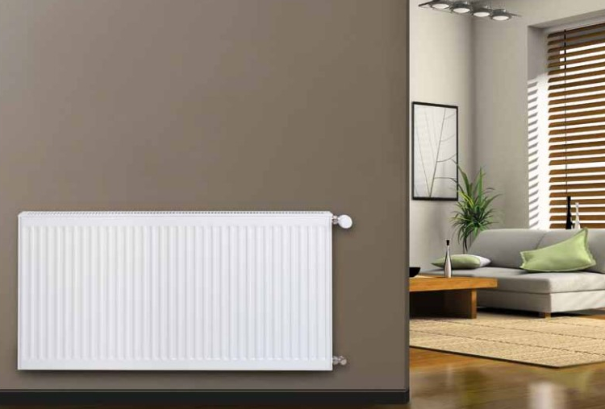

Chauffage
Spies bvba installeert centrale en
elektrische verwarming. Het plaatsen van centrale verwarming is onmisbaar in elke woning. Het zorgt voor
een gelijkmatige warmteverdeling in uw woning. Elektrische verwarming is een pak zuiniger geworden en
door de populariteit van zonnepanelen kan je zelf elektriciteit opwekken voor de elektrische
verwarmingstoestellen. Voordelen van elektrische verwarming zijn: Lagere
installatiekosten, Veilig en Snel.
Electriciteit
 Spies bvba installeert elektriciteit
en vernieuwt elektriciteit . Bij het installeren van elektriciteit komt veel bij te zien zoals: Een
elektriciteitskeuring krijgen bij wijziging, renovatie of uitbreiding van de bestaande elektrische
installatie. Voor een elektriciteitsinstallatie met de plaatsing van een elektriciteitskast, bekabeling,
stopcontacten en schakelaars kan u bij ons rekenen op de laagste kostprijs. Het installeren van domotica
doet de prijs vanzelfsprekend oplopen.
Spies bvba installeert elektriciteit
en vernieuwt elektriciteit . Bij het installeren van elektriciteit komt veel bij te zien zoals: Een
elektriciteitskeuring krijgen bij wijziging, renovatie of uitbreiding van de bestaande elektrische
installatie. Voor een elektriciteitsinstallatie met de plaatsing van een elektriciteitskast, bekabeling,
stopcontacten en schakelaars kan u bij ons rekenen op de laagste kostprijs. Het installeren van domotica
doet de prijs vanzelfsprekend oplopen.
Sanitair
 Spies bvba installeert sanitair. Sanitair
betekent boilers, waterleidingen, wc, etc. Alles waar water voor wordt gebruikt. Bij boilers zijn er 2
populaire soorten: een Condensatieketel: zijn vandaag de standaard geworden. Condensatieketels
recupereren warmte uit de verbrandingsgassen. Een Warmtepomp: gebruikt warmte uit de bodem, uit het
grondwater of uit de buitenlucht. Waterleidingen bestaat uit twee grote aparte delen. De water toevoer
en de water afvoer. De manier waarop het sanitair warm water wordt opgewarmd, is dankzij nieuwe
technologieën, zowel op economisch- als op ecologisch vlak, er zeer sterk op vooruit gegaan.
Spies bvba installeert sanitair. Sanitair
betekent boilers, waterleidingen, wc, etc. Alles waar water voor wordt gebruikt. Bij boilers zijn er 2
populaire soorten: een Condensatieketel: zijn vandaag de standaard geworden. Condensatieketels
recupereren warmte uit de verbrandingsgassen. Een Warmtepomp: gebruikt warmte uit de bodem, uit het
grondwater of uit de buitenlucht. Waterleidingen bestaat uit twee grote aparte delen. De water toevoer
en de water afvoer. De manier waarop het sanitair warm water wordt opgewarmd, is dankzij nieuwe
technologieën, zowel op economisch- als op ecologisch vlak, er zeer sterk op vooruit gegaan.